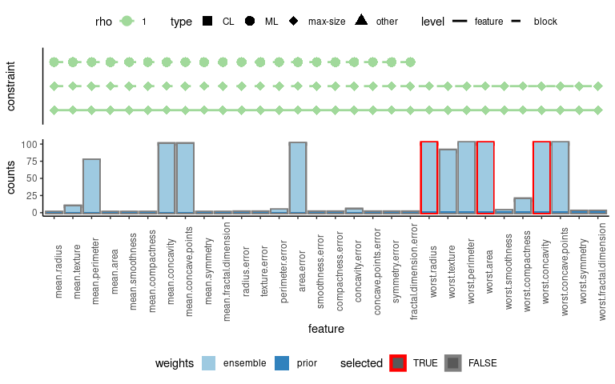

Block feature selection with UBayFS
Anna Jenul, Stefan Schrunner
2022-11-26
BFS_UBayFS.RmdIntroduction
Block feature selection is essential in different fields of application, including treatment outcome prediction in healthcare (for diseases such as cancer). Commonly, data is available from multiple sources, including clinical, genetic, and image data, where measurements from a common source are aggregated into a feature block. In many cases, however, not all data sources are relevant for machine learning models: Suppose we suspected that image data would not contain additional information to the other feature blocks. In that case, it might be easier, in terms of data acquisition and availability, to favor models that do not depend on all data sources at once. In order to detect that a single feature block does not provide any additional information, block feature selection can be deployed. UBayFS is able to cover this scenario by specifying constraints on a block level.
UBayFS example
At first we load the package and the Breast Cancer Wisconsin (BCW) example dataset, which is described in the main vignette.
library(UBayFS)
#> Warning in rgl.init(initValue, onlyNULL): RGL: unable to open X11 display
#> Warning: 'rgl.init' failed, running with 'rgl.useNULL = TRUE'.
data(bcw)For block feature selection, it is necessary to define each feature’s block affiliation, which is provided either (a) via a block list, or (b) via a block matrix.
Version (a): block list
The first example demonstrates how a list of block indices can provide the block structure of the dataset. We define three blocks for the BCW dataset, where the first block contains features with indices 1 to 10, block two features with indices 11 to 20, and block three features with indices 21 to 30.
block_list = list()
block_list[[1]] = 1:10
block_list[[2]] = 11:20
block_list[[3]] = 21:30
block_list
#> [[1]]
#> [1] 1 2 3 4 5 6 7 8 9 10
#>
#> [[2]]
#> [1] 11 12 13 14 15 16 17 18 19 20
#>
#> [[3]]
#> [1] 21 22 23 24 25 26 27 28 29 30For the UBayFS model, we define a max-size block constraint
restricting the number of selected blocks to (up to) one. Thus, the
constraint_vars parameter is set to the maximum number of
blocks to be selected, and num_elements contains the number
of blocks, which equals the number of elements in the block_list.
block_constraints = buildConstraints(constraint_types = c("max_size"),
constraint_vars = list(1),
num_elements = length(block_list),
rho = 1,
block_list = block_list)
block_constraints
#> $A
#> [,1] [,2] [,3]
#> [1,] 1 1 1
#>
#> $b
#> [1] 1
#>
#> $rho
#> [1] 1
#>
#> $block_matrix
#> [,1] [,2] [,3] [,4] [,5] [,6] [,7] [,8] [,9] [,10] [,11] [,12] [,13] [,14] [,15] [,16] [,17] [,18] [,19] [,20] [,21] [,22] [,23] [,24] [,25] [,26] [,27] [,28] [,29] [,30]
#> [1,] 1 1 1 1 1 1 1 1 1 1 0 0 0 0 0 0 0 0 0 0 0 0 0 0 0 0 0 0 0 0
#> [2,] 0 0 0 0 0 0 0 0 0 0 1 1 1 1 1 1 1 1 1 1 0 0 0 0 0 0 0 0 0 0
#> [3,] 0 0 0 0 0 0 0 0 0 0 0 0 0 0 0 0 0 0 0 0 1 1 1 1 1 1 1 1 1 1Version (b): block matrix
Assuming the same block structure as for the block list, we demonstrate how to specify the block structure in UBayFS via a block matrix. The block matrix is a binary assignment matrix consisting of rows representing the feature blocks and columns representing the features in the dataset. Note that, in general, a feature may be assigned to an arbitrary number of blocks (i.e., the row and column sums are not restricted), but in practice, a partition of the feature set is sufficient in most cases.
block_matrix = matrix(0, nrow = 3, ncol = ncol(bcw$data))
block_matrix[1, 1:10] = 1
block_matrix[2, 11:20] = 1
block_matrix[3, 21:30] = 1
block_matrix
#> [,1] [,2] [,3] [,4] [,5] [,6] [,7] [,8] [,9] [,10] [,11] [,12] [,13] [,14] [,15] [,16] [,17] [,18] [,19] [,20] [,21] [,22] [,23] [,24] [,25] [,26] [,27] [,28] [,29] [,30]
#> [1,] 1 1 1 1 1 1 1 1 1 1 0 0 0 0 0 0 0 0 0 0 0 0 0 0 0 0 0 0 0 0
#> [2,] 0 0 0 0 0 0 0 0 0 0 1 1 1 1 1 1 1 1 1 1 0 0 0 0 0 0 0 0 0 0
#> [3,] 0 0 0 0 0 0 0 0 0 0 0 0 0 0 0 0 0 0 0 0 1 1 1 1 1 1 1 1 1 1The same block feature constraints as for the block list can be
produced using the block matrix. However, note that the
num_elements parameter, specifying the number of blocks,
has to be set to the number of rows in the block matrix:
block_constraints = buildConstraints(constraint_types = c("max_size", "must_link"),
constraint_vars = list(1, c(1,2)),
num_elements = nrow(block_matrix),
rho = 1,
block_matrix = block_matrix)
block_constraints
#> $A
#> [,1] [,2] [,3]
#> [1,] 1 1 1
#> [2,] -1 1 0
#> [3,] 1 -1 0
#>
#> $b
#> [1] 1 0 0
#>
#> $rho
#> [1] 1 1 1
#>
#> $block_matrix
#> [,1] [,2] [,3] [,4] [,5] [,6] [,7] [,8] [,9] [,10] [,11] [,12] [,13] [,14] [,15] [,16] [,17] [,18] [,19] [,20] [,21] [,22] [,23] [,24] [,25] [,26] [,27] [,28] [,29] [,30]
#> [1,] 1 1 1 1 1 1 1 1 1 1 0 0 0 0 0 0 0 0 0 0 0 0 0 0 0 0 0 0 0 0
#> [2,] 0 0 0 0 0 0 0 0 0 0 1 1 1 1 1 1 1 1 1 1 0 0 0 0 0 0 0 0 0 0
#> [3,] 0 0 0 0 0 0 0 0 0 0 0 0 0 0 0 0 0 0 0 0 1 1 1 1 1 1 1 1 1 1Block-wise prior weights
In addition to block-wise constraints, also prior weights may be specified on block level rather than on feature level. Thus, we define a help function to build the vector of prior block weights. Features from the same block get assigned the same prior weight. In this example, feature weights in block 1 are set to 0.5, feature weights in block 2 are set to 1, and feature weights in block 3 are set to 2.
Evaluation of block feature selection results
After specifying the block constraints, we initialize the UBayFS model. In addition to the block constraints, we require that at most three features are selected in total (max-size constraint).
set.seed(1) # for reproducibility
model = build.UBaymodel(data = bcw$data,
target = bcw$labels,
M = 100,
tt_split = 0.75,
nr_features = 10,
method = "mRMR",
prior_model ="dirichlet",
weights = prior_weights,
lambda = 1,
constraints = buildConstraints(constraint_types = c("max_size"),
constraint_vars = list(3),
num_elements = ncol(bcw$data),
rho = 1),
block_constraints = block_constraints,
optim_method = "GA",
popsize = 100,
maxiter = 100,
shiny = FALSE
)
summary(model)
#> UBayFS model summary
#> data: 569x30
#> labels: B: 357 M: 212
#>
#> === prior constraints ===
#> constraint 1: (1,1,1,1,1,1,1,1,1,1,1,1,1,1,1,1,1,1,1,1,1,1,1,1,1,1,1,1,1,1) x <= 3; rho = 1
#> block constraint 1: (1,1,1) x <= 1; rho = 1
#> block constraint 2: (-1,1,0) x <= 0; rho = 1
#> block constraint 3: (1,-1,0) x <= 0; rho = 1
#> === prior weights ===
#> weights: ( 0.5,0.5,0.5,0.5,0.5,0.5,0.5,0.5,0.5,0.5,1,1,1,1,1,1,1,1,1,1,2,2,2,2,2,2,2,2,2,2 )
#>
#> === likelihood ===
#> ensemble counts: ( 0,9,76,0,0,0,100,100,0,0,0,0,3,100,0,0,4,0,0,0,100,89,100,100,1,18,100,100,0,0 )
#>
#> === feature selection results ===
#> no output produced yetWe observe, that the summary() prints an additional line
for block constraints. All further steps are similar to the UBayFS
variant without block constraints. In this example, three features from
the third block are selected. Hence, all constraints are fulfilled.
model = UBayFS::train(model)
#> [1] "Running Genetic Algorithm"
summary(model)
#> UBayFS model summary
#> data: 569x30
#> labels: B: 357 M: 212
#>
#> === prior constraints ===
#> constraint 1: (1,1,1,1,1,1,1,1,1,1,1,1,1,1,1,1,1,1,1,1,1,1,1,1,1,1,1,1,1,1) x <= 3; rho = 1
#> block constraint 1: (1,1,1) x <= 1; rho = 1
#> block constraint 2: (-1,1,0) x <= 0; rho = 1
#> block constraint 3: (1,-1,0) x <= 0; rho = 1
#> === prior weights ===
#> weights: ( 0.5,0.5,0.5,0.5,0.5,0.5,0.5,0.5,0.5,0.5,1,1,1,1,1,1,1,1,1,1,2,2,2,2,2,2,2,2,2,2 )
#>
#> === likelihood ===
#> ensemble counts: ( 0,9,76,0,0,0,100,100,0,0,0,0,3,100,0,0,4,0,0,0,100,89,100,100,1,18,100,100,0,0 )
#>
#> === feature selection results ===
#> ( 21,24,27 )
#> ( 21,24,28 )
#> ( 21,23,28 )
#> ( 21,27,28 )
#> ( 21,23,24 )
plot(model)
#> [1] "Warning: multiple optimal feature sets, plotting first feature set."
In the plot, block constraints are shown with dashed lines, while solid lines represent ordinary (feature-)constraints. As demonstrated, blocks 1 and 2 are connected via a must-link constraint (dotted line between features of block 1 and block 2)¨.
Properties of the final feature set(s):
evaluateMultiple(state = model$output$feature_set[1,], model = model)
#> 1
#> cardinality 3.00
#> log total utility -1.22
#> log posterior feature utility -1.22
#> log admissibility 0.00
#> log block admissibility 0.00
#> number violated constraints 0.00
#> number violated block-constraints 0.00
#> avg feature correlation 0.77Conclusion
The specification of block constraints in the UBayFS model follows the same syntax as ordinary feature set constraints. Thus, block constraints can be easily integrated and combined with feature-wise constraints. Further, the framework allows setting arbitrary linear constraints for blocks, as well as for single features.